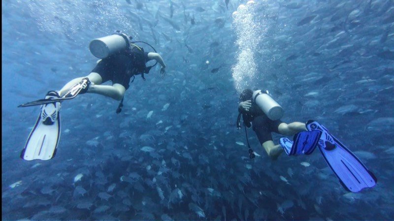
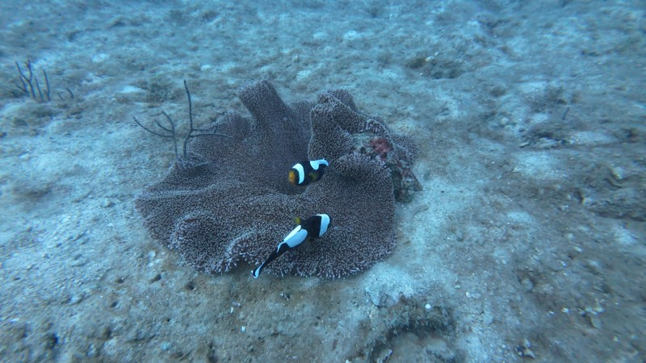
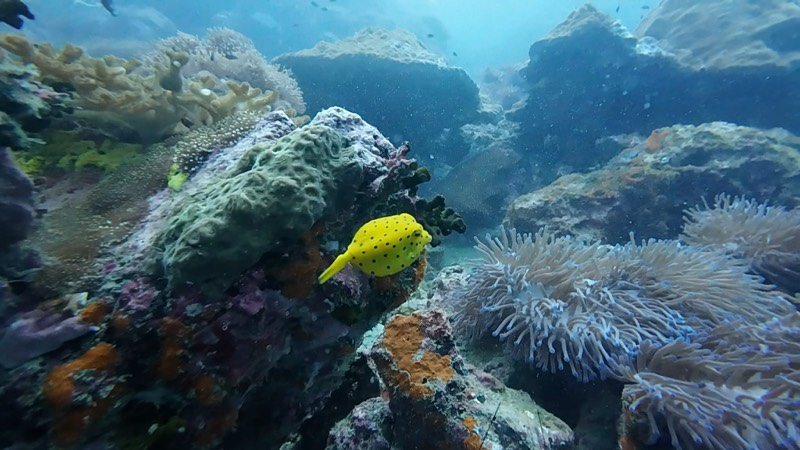
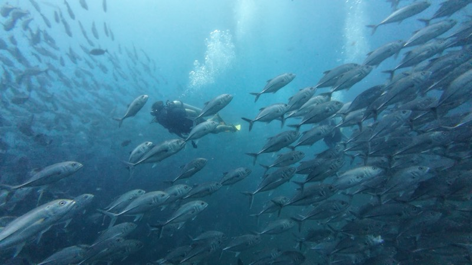
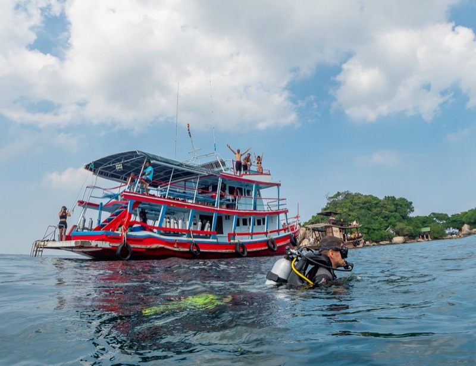
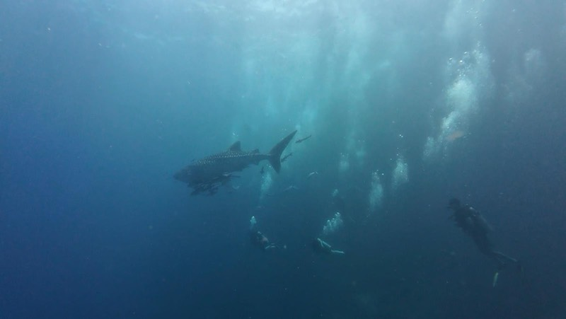
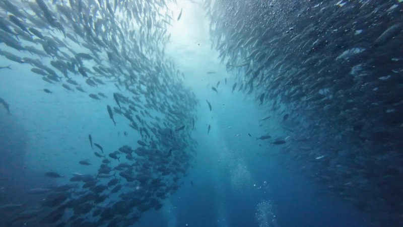
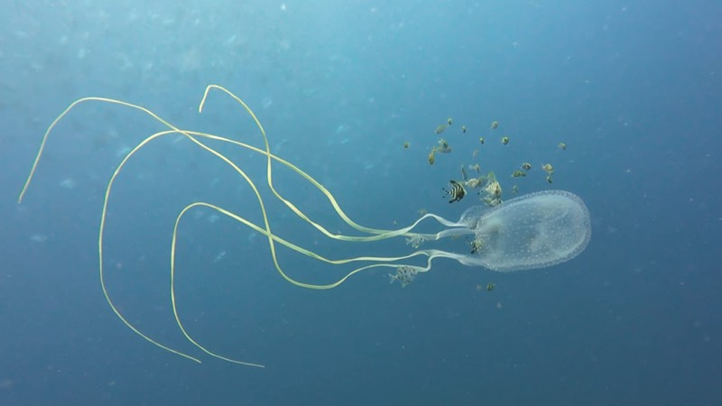
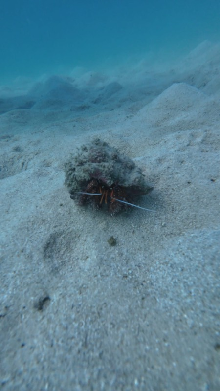
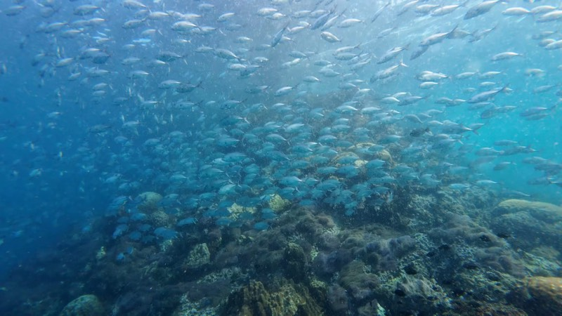

Sans certification

Baptême (Try Dive)
Votre première fois sous l'eau. Une journée complète, deux élèves maximum par instructeur, à Koh Ma ou Sail Rock.
Par personne4,200฿
Détails
Ici, sous l'eau,tout change
Notre bateau quitte Chaloklum à 9h30 pour Sail Rock, la meilleure plongée du golfe de Thaïlande. Baptêmes, Fun Dives et formations SSI à partir de l'Open Water, en petits groupes, avec des instructeurs patients, et un requin-baleine si le golfe est généreux.
Faites défiler pour descendre
Votre première fois sous l'eau. Une journée complète, deux élèves maximum par instructeur, à Koh Ma ou Sail Rock.
Par personne4,200฿
Détails
Certifié en trois jours et autonome jusqu'à 18 m partout dans le monde. Quatre élèves maximum, plongées à Sail Rock.
3 jours · SSI12,900฿
Détails
Groupes de quatre plongeurs maximum. Sail Rock, Koh Ma, Little Sail Rock et la plateforme pétrolière.
Par sortie3,200฿
DétailsLa plupart des bateaux partent avec plus de 30 plongeurs. Nous limitons à 20, et les baptêmes se font à deux élèves par instructeur. Moins de monde, c'est une vraie attention sous l'eau, du matériel monté sans se presser et de la place sur le pont entre les plongées.
Nous larguons les amarres à 9h30 : nous arrivons à Sail Rock et Koh Ma quand les autres bateaux rentrent déjà. Des sites plus calmes et une meilleure visibilité.
Nous avons ouvert en janvier 2024 avec une idée claire de ce que doit être une journée de plongée : sûre, sans précipitation et vraiment fun. Nos instructeurs SSI ont plus de dix ans d'expérience à guider des plongées en Égypte, aux Philippines, en Indonésie et en Thaïlande, et ce niveau d'exigence est désormais à Chaloklum, à bord de notre propre bateau.
Au-delà de Sail Rock, nous plongeons à Koh Ma, Little Sail Rock et sur la plateforme pétrolière. Quand les conditions le permettent, les plongeurs certifiés font plusieurs sites dans la même journée : plus de vie marine, moins de temps de trajet.
Tout notre matériel date de 2024 et il est vérifié chaque jour. Détendeurs, gilets et combinaisons du XS au XXL, avec l'entretien officiel SSI depuis le premier jour.
Ce qu'en disent nos plongeurs
5* dive centre for a reason! Our guide / instructor, Boris, was truly fantastic! High energy, funny, patient and such a great character, whilst being completely professional at all times, felt like we were in super safe hands.
The dive itself - wow - Sail Rock is a must do! These dives were like nothing we’d seen before, thousands and thousands of fish, huge schools, and great variety. My particular favourite was the huge schools of barracuda. I sent videos to friends and they thought it was AI 😂😂
We will remember this day for the rest of our lives, and so happy we picked TDB. Don’t think twice, just book.
I came to Boris with a real fear of the water but a dream to dive - and he was the perfect choice. 🙏🏼
He explained everything with patience, professionalism, and in such a friendly, easygoing way.
On my first time in the water, I was extremely scared and overwhelmed, but he stayed calm, patient, and supportive the entire time. He gave me the space I needed to adjust, and step by step, we managed to dive together - and in the end of that day, I was even able to dive on my own 🥹
Underwater, he paid attention to every little detail, constantly checked that I was okay, and made me feel completely safe even at depth.
I highly recommend! I enjoyed every single moment. 🤩
We had a great experience diving with this school over two different days. The staff is professional, friendly, and safety-focused. The briefings were clear, the equipment was in excellent condition, and everything was very well organized and on time.
We dove at Sail Rock both days, and everything went perfectly. Special thanks to our instructor for filming our dives, we really appreciate having those amazing memories. Highly recommended!
I did my open water diver at the divers boat and I can honestly say everything was perfect. Boris, the owner of the diving school, has a very very good way of introducing newcomers to diving. He was explaining everything very calmly and well structured. His way to teach built up my confidence, so I felt very comfortable when we went for my first 4 open water dives. In general he is a very easy going and funny person. I would definitely come here again to do more diving with him. Also the diving instructor Parth did a very good job at teaching me the confined water exercises and the handling of the diving equipment :)
Had an amazing dive yesterday! Absolutely incredible views at Sail Rock! Boris was a really energetic instructor. Very professional with a mix of fun! Would highly recommend if you're feeling unsure he is the guy you need! He also captured some incredible videos of the dive! 10/10
Had a great diving experience. Our first dive was 40 minutes and involved a few learning curves because some of us hadn’t dived for a while and none of us had dived from a boat. Between dives we had a Thai curry lunch and our instructor August was stern but kind in helping us improve on safety and breathing, resulting in the next dive lasting 50 minutes! He wanted to help us and I am a better diver now because of him.
My experience with the Open Water course was incredible. The instructor is an absolute pro. He has such a clear and friendly way of explaining things that the course felt very enjoyable.
On the first day, he sat down with me and explained everything I needed to know before diving, with great patience and attention to detail. During my first dive, he was always very attentive, making me feel safe and teaching everything calmly and professionally.
During the second, third, fourth, and fifth dives, he made me feel so comfortable and confident that I was able to fully enjoy the fish and marine life.
I recommend this dive center and the instructor Boris a 100%!
Had a very good time fun diving with instructor David and deep diving course with Sebastian with the guidance of instructor Boris!
Friendly and professional crew, nice boat equipped with everything you need - toilet, delicious food, all equipment and more...
Highly recommended 🙏☝️💪👌
Great crew and team! Went on a 2 dives program with them and I couldn’t be happier! I’m not a very experienced diver and it was important for me to have a good dive master or instructor. It was perfect. We were 3 divers plus the dive master. The dives went very smooth and very well guided. We didn’t manage to see the whale shark but we saw a ton of other fish.
Une journée à bord du Rungworawan
Passez à la boutique de Chaloklum pour remplir le formulaire d'inscription. Pas besoin d'essayer le matériel : tout l'équipement est sur le bateau, à votre taille.
Rendez-vous au bateau, sur le port de Chaloklum, à 9h15. Nous partons à 9h30, choisissons l'itinéraire selon la marée et les conditions, et vous briefons tranquillement pendant le trajet.
On descend ensemble le long du bout. Les débutants restent peu profonds et au calme ; les plongeurs certifiés vont plus bas.
Un repas chaud avec du riz, beaucoup de fruits, des boissons chaudes et fraîches, de l'ombre et une baignade. Juste le temps de bien désaturer et de parler de ce que vous avez vu.
Un autre site ou un autre profil : photo, plus profond, ou une dérive tranquille à la recherche des tortues.
Rinçage, carnet de plongée rempli, et nous vous envoyons la vidéo sous-marine avant même que vous soyez sec.
Expériences
Sorties quotidiennes à Sail Rock pour les plongeurs certifiés comme pour les grands débutants. Chaque prix comprend votre instructeur ou guide SSI, l'équipement complet, un repas chaud, des fruits et des boissons à bord, et la vidéo sous-marine de votre plongée.

1 jour · Plongeurs certifiés
Quatre plongeurs maximum par guide. Sail Rock, Koh Ma, Little Sail Rock ou la plateforme pétrolière.
3,200฿
Plus
1 jour · Sans certification
Votre première respiration sous l'eau, deux élèves par instructeur, dans les eaux calmes de Koh Ma.
4,200฿
Plus
1 jour · Sans certification
Un cran au-dessus du baptême : plus de technique, plus de temps sous l'eau et un vrai avant-goût de la plongée.
4,900฿
Plus
1 jour · En surface
Venez pour la balade en bateau et la vue. Idéal pour les familles, les non-plongeurs et ceux qui hésitent encore.
1,500฿
PlusFormations SSI
Formation internationale SSI en petits groupes : quatre élèves maximum par instructeur, notre propre bateau et une certification numérique dès la réussite. De votre toute première respiration jusqu'au Rescue Diver.

Plongées de l'Open Water
à Sail Rock
Commencez ici · 3 jours
Le niveau reconnu partout. En trois jours, vous passez des eaux peu profondes de Koh Ma à la plongée certifiée et autonome jusqu'à 18 mètres, partout dans le monde. Dès 10 ans. Plus de 400 plongeurs se sont certifiés avec nous depuis 2024.
La suite de l'Open Water : sites plus profonds, meilleure flottabilité, nouvelles compétences.
2 jours
12,500฿
DétailsNotre conseil après l'Open Water : Deep + Nitrox, les deux spécialités qui élargissent vraiment votre plongée.
2 jours
13,500฿
DétailsPlanifiez et réalisez des plongées jusqu'à 40 m : toute la hauteur de Sail Rock.
2 jours
8,500฿
DétailsLa formation qui change votre façon de plonger avec les autres.
2 jours
11,600฿
DétailsPlus de temps au fond, des intervalles de surface plus courts. En une journée.
1 jour
4,500฿
DétailsSites de plongée
Sail Rock est la tête d'affiche, et elle le mérite. Mais la vraie raison de plonger depuis Chaloklum, c'est tout ce qu'il y a d'autre à portée.
Passez votre lampe sur un site pour lui rendre ses couleurs

Tous niveaux
5–40mètres
Le célèbre pinacle en pleine mer et sa cheminée verticale, The Chimney. À une heure de bateau. La meilleure plongée du golfe de Thaïlande, un incontournable.

Débutants et formations
5–18mètres
À dix minutes de Chaloklum, sans courant, avec un jardin de coraux durs en vraiment bonne santé. C'est ici que se passe votre première plongée parfaite.

Intermédiaire
8–20mètres
Un mini Sail Rock à dix minutes à l'est de Chaloklum. Beaucoup moins de plongeurs, autant de vie. Le joyau caché pour échapper à la foule.

Confirmé · plus de 20 plongées
10–30mètres
Une structure artificielle isolée en pleine mer, où d'énormes bancs de poissons viennent s'abriter. La plongée la plus différente et la plus riche en adrénaline du golfe.

Rungworawan
Chaloklum, Koh Phangan
Notre propre bateau
Spacieux, stable et entièrement équipé. Il nous emmène à Sail Rock tous les jours, et c'est justement grâce à notre propre bateau que nous pouvons plonger en petits groupes, partir à 9h30 et changer de programme quand la marée le demande.
Chaque détendeur, gilet et combinaison est vérifié tous les jours et entretenu selon le calendrier officiel SSI. Venez en maillot de bain ; nous avons le reste à votre taille.
L'équipe de Phangan
Nos instructeurs enseignent en français, anglais et espagnol, avec de l'italien et de l'allemand à bord une bonne partie de la saison. À nous tous, nous cumulons plus de dix ans de plongée en Égypte, aux Philippines, au Cambodge, au Vietnam, en Indonésie et en Thaïlande, ce qui veut surtout dire que nous savons expliquer les courants et la vie marine à quelqu'un qui n'a jamais porté de masque.

Manager · bureau et réservations
Rui est le cœur de la boutique. Elle gère le bureau et toutes les réservations, veille à ce que la journée se déroule à l'heure et vous accueille comme vous le méritez, en anglais ou en chinois.

Manager · instructeur principal · SSI n° 112758
Professionnel de la plongée depuis 2015 et instructeur SSI depuis 2022, avec plus de 5 000 plongées à son actif. Boris dirige les instructeurs et divemasters pour que chaque sortie soit sûre, fun et adaptée à votre niveau.

Notre bateau
Spacieux, stable et entièrement équipé. Il va à Sail Rock tous les jours. Embarquez pour la prochaine sortie et faites partie de son histoire.
Galerie photos
Tortues, requins-baleines et sourires sous l'eau, tout photographié lors de nos propres sorties depuis Chaloklum. Aucune photo de banque d'images.






Nous contacter
Écrivez-nous sur WhatsApp : une vraie personne vous répond, généralement en moins d'une heure. Donnez-nous votre niveau et vos dates, ou dites-nous que vous ne savez pas par où commencer, c'est aussi un très bon message.
Par le baptême de plongée (Try Dive). Une journée complète, deux élèves par instructeur et aucune certification requise : vous respirerez sous l'eau pour la première fois dans les eaux calmes et sans courant de Koh Ma. Si vous adorez, le Basic Diver et la formation Open Water reprennent exactement là où vous vous êtes arrêté.
8 ans pour le baptême (Try Dive), et 10 ans pour le Basic Diver et la formation SSI Open Water. Les enfants trop jeunes pour plonger peuvent faire du snorkeling à Sail Rock depuis le même bateau.
Oui, et beaucoup le font. Les non-plongeurs peuvent monter à bord et faire du snorkeling à Sail Rock pour 1,500฿ pendant que le reste du groupe plonge. Écrivez-nous sur WhatsApp avec l'âge et l'expérience de chacun, et nous préparerons un programme qui plaira à tout le monde, sur le même bateau.
Honnêtement, peut-être, et c'est ce qui fait la magie. Sail Rock est l'un des meilleurs endroits du golfe de Thaïlande pour les rencontrer. La saison théorique va d'avril à juin, mais nous avons aussi fait de superbes rencontres en février et en septembre : ce sont des animaux sauvages qui suivent leur propre calendrier. Ce que vous verrez à coup sûr, ce sont de grands bancs de barracudas, de poissons-chauves-souris et de carangues autour du pinacle.
Nous plongeons toute l'année et l'eau reste à 28–30 °C. Sail Rock est la plus claire environ de mai à octobre, souvent avec 20–30 m de visibilité. De janvier à avril, l'eau est plus riche en plancton et la visibilité y est plutôt de 5–10 m, mais ce plancton nourrit les énormes bancs de poissons et attire les requins-baleines, et c'est justement la période où Koh Ma et Little Sail Rock sont les plus claires. La seule vraie pause, c'est la mousson, environ de novembre à mi-décembre, quand nous fermons les jours où les bateaux ne peuvent pas sortir en sécurité.
La boutique se trouve dans le village de Chaloklum, sur la côte nord de Koh Phangan, et le bateau part du port de Chaloklum. Nous ne faisons pas de navette depuis les hôtels : les taxis sur l'île sont chers, et louer un scooter pour la journée (environ 250฿) est moins cher et plus simple. Ouvrez la carte ci-dessus pour l'itinéraire.
Écrivez-nous sur WhatsApp avec vos dates et votre niveau. Un acompte confirme votre place, et vous pouvez payer en espèces ou par Revolut. Passez à la boutique la veille pour remplir le formulaire d'inscription, puis retrouvez-nous au bateau, sur le port de Chaloklum, à 9h15. Si nous annulons la sortie à cause de la météo, vous êtes intégralement remboursé.
Un maillot de bain, une serviette et de la crème solaire. Tout l'équipement de plongée est inclus : détendeurs, gilets et combinaisons du XS au XXL, tout neuf de 2024 et vérifié chaque jour. Un repas chaud avec du riz entre les plongées, beaucoup de fruits, des boissons chaudes et fraîches et la vidéo sous-marine de votre plongée sont aussi inclus.
Nos instructeurs enseignent en français, anglais et espagnol. Une bonne partie de la saison, nous avons aussi un instructeur qui parle italien et allemand, et le russe certaines dates : demandez-le en réservant. Rui, qui gère le bureau, parle anglais et chinois.